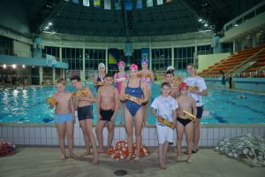
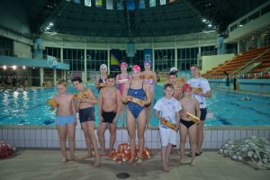

Novosti
 

Klas i najbolje bh plivačica Amina Kajtaz na olimpijskom bazenu Otoka
Nakon što su se počastili Fit integralnim keksom, mališani su sa Aminom i zaplivali
Najbolja bh. plivačica Amina Kajtaz posjetila je Olimpijski bazen Otoka, gdje je polaznicima škole plivanja i članovima plivačkih klubova prenijela svoja profesionalna iskustva, ali i savjete kako sportom i uravoteženom ishranom doprinijeti svome zdravlju. Ovom druženju, koje je organizirala prehrambena industrija Klas d.d. Sarajevo, posebno su se obradovali najmlađi plivači. Nakon što su se počastili Fit integralnim keksom kompanije Klas, mališani su sa Aminom i zaplivali.
“Razgovarali smo o značaju zdrave ishrane, i počastili se novim okusom Fit keksa sa kakaom i lješnicima. Inače, brand Fit, sada u četiri okusa, je moja prehrambena navika i uz sport moj saveznik za zdravlje i vitku liniju. Čak četvrtinu keksa čine ovsene pahuljice koje snižavaju holesterol i sprječavaju razvoj srčanih oboljenja. Ovsene pahuljice su značajan izvor dijetalnih vlakana, sadrže vitamin B1, B5, folnu kiselinu, biotin, vitamin E, kao i cink, magnezijum, bakar, gvožđe, mangan“, istakla je plivačica Amina Kajtaz.
Mostarka Amina Kajtaz velika je nada i ponos bh. sporta. Ima 21 godinu, a već sada je najbolja bh. plivačica sa osvojenih deset rekorda i više od 500 medalja. Čak devet puta proglašena je najboljom sportašicom Grada Mostara.
Izvor: Klas.ba